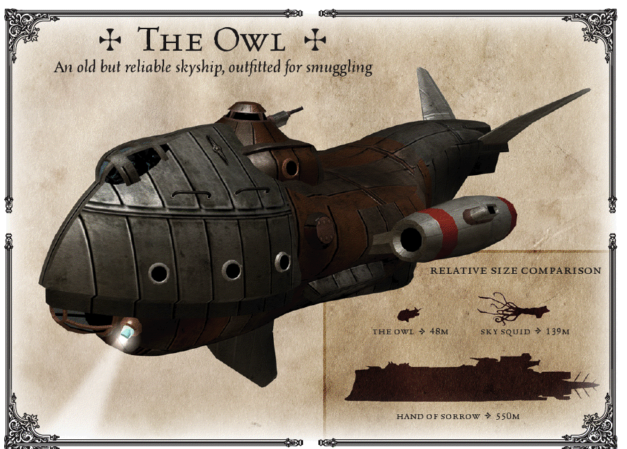

Cargo Céleste C9 Modifié
L’Owl a été un Cargo Céleste de classe C9 cargo mais a été depuis grandement modifié par Cyrus et Kale. Il a une zone de cargo plus petite et à la place on peut trouver quatre couchettes. Il a également un certain nombre de petits compartiments pour cacher la contrebande répartis dans le vaisseau.
L’Owl est un vieux vaisseau, mais il peut en remontrer aux vaisseaux modernes grâce à ces moteurs modifiés et sa chaudière à vapeur gonflée. Snargle a également fait quelques ajustements inédits sur les manettes pour permettre à ce vaisseau de manoeuvrer comme s’il était beaucoup plus petit.
Malheureusement, ces modifications mettent à rude épreuve ce vieux rafiot. Kale arrive à la faire tourner au jour le jour, mais quand on la met sous pression, (et ça peut arriver souvent), les choses peuvent se mettre en panne à tout moment, entre les tuyaux percés, les fuites de vapeur ou de fluides, ou pire encore.
Cependant, l’Owl n’est pas juste un Vaisseau Céleste, c’est aussi une maison pour son équipage. Ils se rassemblent autour de la vieille table en bois, dans le carré, tous les soirs, et remercient les vents de la fortune de leur avoir donné un Vaisseau aussi superbe.
Traité pour résister à la corrosion dans les Abysses Inférieures durant 4 heures.
[ ] Besoin de carburant [ ] Besoin de provisions [ ] Endommagé / fuit. [ ] Ralenti [ ] En panne
Note
MdJ: Vous pouvez infliger une condition au Owl lorque les événements le permettent. L’aventure commence avec la condition “Besoin de Carburant”.